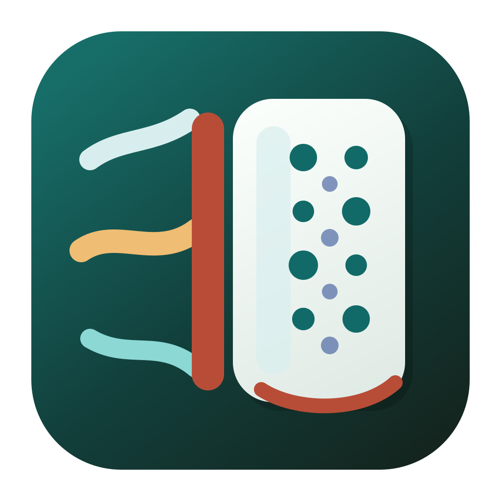

Interactive acoustics lab
Practical calculators for understanding porous treatment and the early reflections that shape loudspeaker response.
Choose a lab
Materials
Porous Absorber Efficiency
Compare absorber thickness, flow resistivity, air gaps, and incidence models across the audible range.
Front wall
Speaker Boundary Interference
Explore front-wall cancellation, speaker and listener placement, high-pass filtering, and treatment behind the speaker.
Desktop
Desk-Bounce Predictor
Visualize the first desktop reflection, predict comb filtering, and compare monitor, listener, and absorber placement.